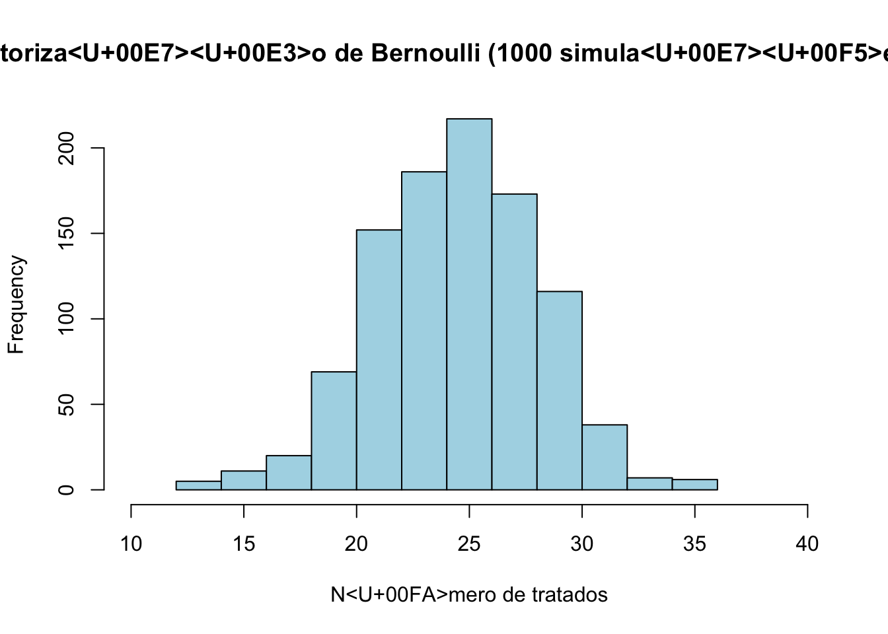

Capítulo 4 Experimentos
4.1 Introdução
No Cap. 2, mostramos que a ignorabilidade forte — independência entre resultados potenciais e tratamento, condicional a \(\mathbf{X}_i\) — identifica o ATE. No Cap. 3, vimos que o critério backdoor nos diz quais covariáveis incluir para garantir essa independência. Agora veremos o caso ideal: quando a pesquisadora controla o mecanismo de atribuição do tratamento — o experimento aleatório — e a ignorabilidade é garantida por construção.
Um experimento é o desenho de pesquisa no qual a pesquisadora controla o mecanismo de atribuição do tratamento. Seja \(p_i = P(D_i = 1)\) a probabilidade de a unidade \(i\) receber o tratamento. Em um experimento, \(p_i\) é conhecido e controlado pela pesquisadora. Em contraposição, um estudo observacional é quando a pesquisadora não controla esse mecanismo — ele é determinado pela natureza ou pela realidade social.
Neste capítulo, veremos por que experimentos produzem identificação causal crível. Vamos supor condições ideais: sem attrition (perda de participantes) e com compliance perfeito (todos recebem o tratamento atribuído). Continuamos supondo SUTVA (Cap. 2): não há interferência entre unidades e o tratamento é definido de forma não ambígua.
4.2 Recapitulação: SDO e viés de seleção
No Cap. 2, derivamos que a simples diferença de médias (SDO, Simple Difference in Outcomes) pode ser decomposta em efeito causal mais viés:
\[\underbrace{\mathbb{E}[Y_i \mid D_i=1] - \mathbb{E}[Y_i \mid D_i=0]}_{\text{SDO}} = \underbrace{\mathbb{E}[Y_i(1) - Y_i(0) \mid D_i=1]}_{\text{ATT}} + \underbrace{\mathbb{E}[Y_i(0) \mid D_i=1] - \mathbb{E}[Y_i(0) \mid D_i=0]}_{\text{Viés de Seleção}}\]
O viés de seleção surge quando tratados e controles diferem sistematicamente nos resultados potenciais de base. A questão central deste capítulo é: como a aleatorização elimina esse viés?
4.3 Experimentos aleatórios e identificação
Um experimento aleatório satisfaz duas condições:
Positividade: toda unidade tem probabilidade positiva de receber tratamento ou controle: \(0 < p_i < 1\).
Permutabilidade (unconfoundedness): os resultados potenciais são independentes do tratamento: \(Y_i(1), Y_i(0) \perp D_i\).
Em termos do Cap. 3, a aleatorização garante que não haja backdoor paths abertos entre o tratamento e o resultado — pois o tratamento não tem causas que também afetem \(Y\).
O que a permutabilidade implica? Se os resultados potenciais são independentes do tratamento, então:
\[\mathbb{E}[Y_i(0) \mid D_i=1] = \mathbb{E}[Y_i(0) \mid D_i=0] = \mathbb{E}[Y_i(0)]\]
Ou seja, o viés de seleção desaparece:
\[\mathbb{E}[Y_i(0) \mid D_i=1] - \mathbb{E}[Y_i(0) \mid D_i=0] = 0\]
Portanto, sob aleatorização, a SDO estima o ATT. E como a permutabilidade também implica \(\mathbb{E}[Y_i(1) \mid D_i=1] = \mathbb{E}[Y_i(1)]\), o ATT é igual ao ATE:
\[\text{SDO} = \text{ATT} = \tau_{\text{ATE}}\]
Pare e pense: se a condição de tratamento fosse hipoteticamente trocada — todos os tratados passassem para o controle e vice-versa — os resultados esperados permaneceriam os mesmos? Essa é a intuição da permutabilidade.
4.4 Restrição de Exclusão
A aleatorização por si só não basta. Precisamos também que o que afeta \(Y\) seja o tratamento efetivamente recebido, e não o mero fato de ter sido alocado para o tratamento. Formalmente, podemos separar a alocação do tratamento \(Z_i\) do tratamento efetivamente recebido \(D_i\).
A restrição de exclusão diz que os resultados potenciais dependem apenas de \(D_i\), não de \(Z_i\):
\[Y_i(D_i, Z_i = 1) = Y_i(D_i, Z_i = 0) = Y_i(D_i)\]
Quando essa condição pode ser violada? Quando o mecanismo de alocação dispara outras causas que afetam \(Y\). Dois exemplos:
Contaminação. Suponha que um experimento testa o efeito de transferência de renda sobre bem-estar. Se ONGs, sabendo do experimento, ajudarem quem não recebeu o tratamento, a alocação \(Z_i\) afeta \(Y_i\) por um canal diferente do tratamento.
Erro de mensuração assimétrico. Se pesquisadores distintos entrevistam tratados e controles, ou se questionários diferentes são usados para cada grupo, o erro de mensuração pode diferir sistematicamente. Seja \(e_{i,1}\) o erro de mensuração para tratados e \(e_{i,0}\) para controles. A switching equation se torna:
\[Y_i^{obs} = D_i \cdot (Y_i(1) + e_{i,1}) + (1 - D_i) \cdot (Y_i(0) + e_{i,0})\]
Nesse caso, a SDO inclui um termo adicional \(\mathbb{E}[e_{i,1} \mid D_i=1] - \mathbb{E}[e_{i,0} \mid D_i=0]\), que introduz viés mesmo com aleatorização perfeita.
Como garantir a restrição de exclusão?
- Duplo cego (double blindness): nem o participante nem o pesquisador sabem quem recebeu o tratamento.
- Paralelismo na administração: mesmo questionário, mesmos entrevistadores, mesmo protocolo para ambos os grupos.
- Na pior das hipóteses, aleatorização dos entrevistadores entre os grupos.
4.5 Tipos de aleatorização
4.5.1 Aleatorização de Bernoulli
É a aleatorização mais simples: para cada unidade, jogamos uma moeda com probabilidade \(p\) de tratamento. Matematicamente, \(P(D_i = 1) = p\) independentemente para cada \(i\).
O problema é que o número de tratados é aleatório — em princípio, podemos ter todas as unidades no controle ou todas no tratamento (embora isso seja extremamente improvável com \(n\) grande).
set.seed(10)
n <- 50
hist(replicate(1000, sum(rbinom(n, 1, 0.5))),
main = "Aleatorização de Bernoulli (1000 simulações, n=50)",
xlab = "Número de tratados",
col = "lightblue",
xlim = c(10, 40))
A aleatorização de Bernoulli possui \(2^n\) configurações possíveis de alocação entre tratamento e controle.
4.5.2 Aleatorização completa
Para evitar o problema do número variável de tratados, podemos fixar a priori quantas unidades receberão o tratamento. Numeramos cada unidade de \(1\) a \(N\) e sorteamos \(m\) aleatoriamente para o tratamento; o restante vai para o controle.
Vantagem: garante o número de observações em cada grupo. Possui \(\binom{N}{m}\) configurações possíveis — estamos descartando as aleatorizações “indesejáveis” (como todos no controle). O cálculo da variância é mais complexo que na aleatorização de Bernoulli.
4.5.3 Aleatorização condicional (em bloco)
Em muitos contextos, as unidades diferem em características pré-tratamento \(X\) que podem afetar o resultado. A aleatorização em bloco (block random assignment) estratifica as unidades por \(X\) e aleatoriza separadamente dentro de cada estrato.
Exemplo: Em uma amostra de 100 pessoas, queremos 25 homens e 25 mulheres no tratamento. Sorteamos 25 homens para o tratamento (o restante vai para o controle) e, separadamente, 25 mulheres.
Formalmente, a aleatorização em bloco gera permutabilidade condicional: \(Y_i(1), Y_i(0) \perp D_i \mid X_i\). Isso é mais fraco que permutabilidade incondicional — o tratamento não é independente dos resultados potenciais marginalmente, mas é independente dentro de cada estrato.
Para estimar o ATE na população, calculamos o efeito dentro de cada bloco e ponderamos:
\[\hat{\tau}_{\text{ATE}} = \sum_{j=1}^{J} \frac{N_j}{N} \hat{\tau}_j\]
onde \(J\) é o número de blocos, \(N_j\) o tamanho do bloco \(j\), e \(\hat{\tau}_j\) o efeito estimado no bloco.
Vantagens da aleatorização em bloco:
- Pela Lei dos Grandes Números, tende a gerar balanceamento entre os grupos — em variáveis observadas e não-observadas dentro de cada bloco.
- Em geral, aumenta a precisão (reduz o erro padrão), porque removemos parte da variância ao condicionar nos estratos.
- A probabilidade de tratamento pode variar por bloco — essa probabilidade é chamada de propensity score.
4.5.4 Precisão da aleatorização em bloco
Vamos verificar o ganho de precisão com uma simulação. Criamos dois blocos com médias diferentes e comparamos o erro padrão da aleatorização simples com o da aleatorização em bloco.
# Configuração: dois blocos com médias diferentes
n1 <- 10 # bloco 1
n2 <- 16 # bloco 2
N <- n1 + n2
set.seed(12)
y0 <- c(rnorm(n1, 2, 1), rnorm(n2, 6, 1)) # PO controle
y1 <- y0 + 1.5 # PO tratamento (efeito = 1.5)# Aleatorização em bloco: metade de cada bloco para tratamento
t_bloco1 <- sample(1:n1, n1/2)
c_bloco1 <- (1:n1)[!(1:n1 %in% t_bloco1)]
t_bloco2 <- sample((n1+1):(n1+n2), n2/2)
c_bloco2 <- ((n1+1):(n1+n2))[!((n1+1):(n1+n2) %in% t_bloco2)]
# Resultados observados por bloco
y1_obs_bloco1 <- y1[t_bloco1]; y0_obs_bloco1 <- y0[c_bloco1]
y1_obs_bloco2 <- y1[t_bloco2]; y0_obs_bloco2 <- y0[c_bloco2]
# Aleatorização simples (ignora blocos)
y1_obs <- y1[c(t_bloco1, t_bloco2)]
y0_obs <- y0[c(c_bloco1, c_bloco2)]# Erro padrão: aleatorização simples
ep_simples <- t.test(y1_obs, y0_obs)$stderr
# Erro padrão: aleatorização em bloco (ponderado)
ep1 <- t.test(y1_obs_bloco1, y0_obs_bloco1)$stderr
ep2 <- t.test(y1_obs_bloco2, y0_obs_bloco2)$stderr
ep_bloco <- sqrt(ep1^2 * (n1/N)^2 + ep2^2 * (n2/N)^2)
# Comparação
data.frame(
Método = c("Aleatorização simples", "Aleatorização em bloco"),
Erro_Padrão = round(c(ep_simples, ep_bloco), 4)
) |> knitr::kable(caption = "Comparação de erros padrão")| Método | Erro_Padrão |
|---|---|
| Aleatorização simples | 0.9552 |
| Aleatorização em bloco | 0.3723 |
O erro padrão da aleatorização em bloco é substancialmente menor. A intuição: ao estratificar, eliminamos a variação entre blocos (que é grande, pois os blocos têm médias diferentes) e ficamos apenas com a variação dentro de cada bloco.
4.5.5 Aleatorização por cluster
Em alguns contextos, não é possível aleatorizar unidades individuais. Por exemplo, se o tratamento é um programa escolar, pode ser necessário aleatorizar escolas inteiras — todos os alunos de uma escola recebem o mesmo tratamento.
Nesse caso, a unidade de aleatorização é o cluster (escola), não a unidade de análise (aluno). No interior de cada cluster, todo mundo é tratado ou não-tratado: não há variação within, apenas between. Isso causa grande perda de variabilidade nos dados, reduzindo a precisão (aumento no erro padrão). Ainda assim, às vezes é a única aleatorização viável.
4.6 Experimentos fatoriais
Até aqui, consideramos experimentos com um único tratamento binário: cada unidade recebe \(D_i = 1\) ou \(D_i = 0\). Mas muitas perguntas de pesquisa envolvem mais de um fator simultaneamente. Um experimento fatorial é um desenho no qual duas ou mais variáveis de tratamento são manipuladas ao mesmo tempo, e todas as combinações de níveis são testadas.
4.6.1 Desenho \(2 \times 2\)
O caso mais simples é o fatorial \(2 \times 2\): dois fatores, cada um com dois níveis. Suponha que queremos estudar o efeito de (1) um programa de tutoria (\(D_{1i} \in \{0,1\}\)) e (2) um incentivo financeiro (\(D_{2i} \in \{0,1\}\)) sobre o desempenho escolar. O desenho fatorial cruza os dois fatores, gerando quatro condições experimentais:
| Grupo | \(D_{1i}\) (tutoria) | \(D_{2i}\) (incentivo) |
|---|---|---|
| 1 | 0 | 0 |
| 2 | 1 | 0 |
| 3 | 0 | 1 |
| 4 | 1 | 1 |
A unidade \(i\) tem agora quatro resultados potenciais: \(Y_i(0,0)\), \(Y_i(1,0)\), \(Y_i(0,1)\) e \(Y_i(1,1)\). O resultado observado é \(Y_i = Y_i(D_{1i}, D_{2i})\).
4.6.2 Efeitos principais e interações
O desenho fatorial permite estimar três tipos de efeito causal:
- Efeito principal do fator 1 (tutoria): a diferença média entre receber e não receber tutoria, averaged sobre os níveis do incentivo:
\[\tau_1 = \frac{1}{2}\Big[\mathbb{E}[Y_i(1,0) - Y_i(0,0)] + \mathbb{E}[Y_i(1,1) - Y_i(0,1)]\Big]\]
Efeito principal do fator 2 (incentivo): definido analogamente, averaged sobre os níveis da tutoria.
Efeito de interação: mede se o efeito de um fator depende do nível do outro:
\[\tau_{12} = \mathbb{E}[Y_i(1,1) - Y_i(0,1)] - \mathbb{E}[Y_i(1,0) - Y_i(0,0)]\]
Se \(\tau_{12} = 0\), os efeitos dos dois fatores são aditivos — cada fator opera independentemente do outro. Se \(\tau_{12} \neq 0\), há complementaridade (ou substituição) entre os tratamentos.
4.6.3 Eficiência e generalização
Uma vantagem central do desenho fatorial é a eficiência: com a mesma amostra, estimamos os efeitos de múltiplos fatores. Em um desenho \(2 \times 2\) com \(N\) unidades, cada efeito principal usa todas as \(N\) observações (comparando as \(N/2\) que receberam o fator com as \(N/2\) que não receberam), em vez de precisar de um experimento separado para cada fator.
O desenho generaliza para \(K\) fatores: um fatorial \(2^K\) tem \(2^K\) condições experimentais. À medida que \(K\) cresce, o número de condições cresce exponencialmente — o que pode tornar o desenho inviável. No Cap. 5, veremos como os experimentos conjoint lidam com esse problema ao aleatorizar combinações de muitos fatores simultaneamente para cada respondente.
4.7 Experimentos multi-arm
Uma variação comum é o experimento multi-arm (multi-arm trial): em vez de cruzar fatores independentes, a pesquisadora define \(K+1\) condições mutuamente exclusivas — um controle e \(K\) tratamentos — e cada unidade é alocada a exatamente uma delas. No Project STAR, por exemplo, alunos foram aleatorizados para turma regular (\(D_i = 0\)), turma pequena (\(D_i = 1\)) ou turma com assistente (\(D_i = 2\)) dentro de cada escola.
A diferença crucial em relação ao fatorial é que, no multi-arm, os tratamentos são mutuamente exclusivos: se \(D_i = 1\), então necessariamente \(D_i \neq 2\). No fatorial, os fatores são cruzados de forma independente — uma unidade pode receber qualquer combinação.
A análise de um experimento multi-arm tipicamente envolve regredir o resultado em indicadores de cada braço:
\[Y_i = \alpha + \beta_1 X_{i1} + \beta_2 X_{i2} + \gamma W_i + U_i\]
onde \(X_{ik} = \mathbb{1}\{D_i = k\}\) e \(W_i\) são controles (por exemplo, indicadores de estrato). Com um único tratamento binário e aleatorização condicional, Angrist (1998) mostrou que o coeficiente de regressão estima uma média convexa (com pesos positivos) de efeitos causais heterogêneos. No entanto, Goldsmith-Pinkham, Hull, and Kolesar (2024) demonstram que esse resultado não se generaliza para múltiplos tratamentos.
O problema é o contamination bias: quando os tratamentos são mutuamente exclusivos, o resíduo da projeção de \(X_{i1}\) sobre os controles e os demais tratamentos não é mean-independent de \(X_{i2}\), mesmo que ambos sejam aleatorizados condicionalmente em \(W_i\). O coeficiente \(\beta_1\) passa a incorporar não só o efeito de \(D_i = 1\), mas também uma média — com pesos que somam zero e podem ser negativos — dos efeitos dos outros tratamentos. Formalmente:
\[\beta_1 = \underbrace{\mathbb{E}[\lambda_{11}(W_i)\tau_1(W_i)]}_{\text{efeito próprio}} + \underbrace{\mathbb{E}[\lambda_{12}(W_i)\tau_2(W_i)]}_{\text{contaminação}}\]
onde \(\tau_k(w) = \mathbb{E}[Y_i(k) - Y_i(0) \mid W_i = w]\) são os efeitos causais condicionais, \(\lambda_{11}\) são pesos próprios (convexos), e \(\lambda_{12}\) são pesos de contaminação que somam zero.
Duas condições são necessárias para que o contamination bias seja relevante:
Heterogeneidade nos efeitos dos outros tratamentos: se \(\tau_2(w)\) é constante em \(w\), a covariância com os pesos \(\lambda_{12}\) é zero e o viés desaparece.
Variação nos propensity scores entre estratos: se a probabilidade de cada tratamento é a mesma em todos os estratos, os pesos de contaminação são zero.
Em experimentos fatoriais com aleatorização independente dos fatores, o contamination bias não surge — precisamente porque a independência entre fatores elimina a dependência não-linear que gera o problema. Mas em desenhos multi-arm estratificados, onde as probabilidades de alocação variam por estrato, o viés pode ser substantivo, mesmo com aleatorização perfeita dentro de cada estrato.
4.8 Planejando experimentos com DeclareDesign
Uma ferramenta útil para planejar e diagnosticar experimentos é o pacote DeclareDesign (Blair, Coppock, and Humphreys 2023). O framework é baseado no acrônimo MIDA: Models (modelo dos resultados potenciais), Inquiries (estimando), Data strategies (estratégia de dados/aleatorização) e Answer strategies (estimador).
Vamos declarar um experimento simples com dois braços (two-arm trial):
library(DeclareDesign)
# 1. Modelo: 500 unidades, covariável X, efeito de 0.2
model <- declare_model(
N = 500,
X = rep(c(0, 1), each = N / 2),
U = rnorm(N, sd = 0.25),
potential_outcomes(Y ~ 0.2 * Z + X + U)
)
# 2. Estimando: ATE
inquiry <- declare_inquiry(ATE = mean(Y_Z_1 - Y_Z_0))
# 3. Estratégia de dados: aleatorização completa (250 tratados)
data_strategy <- declare_assignment(Z = complete_ra(N = N, m = 250)) +
declare_measurement(Y = reveal_outcomes(Y ~ Z))
# 4. Estimador: diferença de médias via regressão
estimator <- declare_estimator(Y ~ Z, inquiry = "ATE")
# Combinando tudo
two_arm_trial <- model + inquiry + data_strategy + estimatorCada componente corresponde a uma letra do MIDA. A função declare_model especifica a população e os resultados potenciais; declare_inquiry define o estimando (ATE); declare_assignment e declare_measurement descrevem a aleatorização e a switching equation; e declare_estimator especifica como estimamos o efeito.
Podemos simular dados do desenho:
## ID X U Y_Z_0 Y_Z_1 Z Y
## 1 001 0 0.17975340 0.17975340 0.37975340 1 0.37975340
## 2 002 0 0.14184465 0.14184465 0.34184465 0 0.14184465
## 3 003 0 -0.07395336 -0.07395336 0.12604664 1 0.12604664
## 4 004 0 0.41948484 0.41948484 0.61948484 0 0.41948484
## 5 005 0 0.13238069 0.13238069 0.33238069 1 0.33238069
## 6 006 0 0.22464800 0.22464800 0.42464800 1 0.42464800
## 7 007 0 0.29101108 0.29101108 0.49101108 1 0.49101108
## 8 008 0 -0.17435610 -0.17435610 0.02564390 1 0.02564390
## 9 009 0 -0.15919449 -0.15919449 0.04080551 1 0.04080551
## 10 010 0 0.29106704 0.29106704 0.49106704 1 0.49106704E diagnosticar o desenho — verificando viés, erro padrão, poder e cobertura:
##
## Research design diagnosis based on 100 simulations. Diagnosis completed in 1 secs. Diagnosand estimates with bootstrapped standard errors in parentheses (100 replicates).
##
## Design Inquiry Estimator Outcome Term N Sims Mean Estimand
## two_arm_trial ATE estimator Y Z 100 0.20
## (0.00)
## Mean Estimate Bias SD Estimate RMSE Power Coverage
## 0.20 -0.00 0.04 0.04 0.99 0.98
## (0.00) (0.00) (0.00) (0.00) (0.01) (0.01)Também podemos comparar o desempenho com diferentes tamanhos de amostra:
##
## Research design diagnosis based on 500 simulations. Diagnosis completed in 7 secs. Diagnosand estimates with bootstrapped standard errors in parentheses (100 replicates).
##
## Design N Inquiry Estimator Outcome Term N Sims Mean Estimand Mean Estimate
## design_1 100 ATE estimator Y Z 500 0.20 0.20
## (0.00) (0.00)
## design_2 200 ATE estimator Y Z 500 0.20 0.20
## (0.00) (0.00)
## design_3 300 ATE estimator Y Z 500 0.20 0.20
## (0.00) (0.00)
## design_4 400 ATE estimator Y Z 500 0.20 0.20
## (0.00) (0.00)
## design_5 500 ATE estimator Y Z 500 0.20 0.20
## (0.00) (0.00)
## Bias SD Estimate RMSE Power Coverage
## 0.00 0.05 0.05 0.98 0.95
## (0.00) (0.00) (0.00) (0.01) (0.01)
## -0.00 0.05 0.05 0.98 0.97
## (0.00) (0.00) (0.00) (0.01) (0.01)
## -0.00 0.05 0.05 0.97 0.94
## (0.00) (0.00) (0.00) (0.01) (0.01)
## 0.00 0.05 0.05 0.98 0.96
## (0.00) (0.00) (0.00) (0.01) (0.01)
## -0.00 0.05 0.05 0.97 0.94
## (0.00) (0.00) (0.00) (0.01) (0.01)4.9 Resumo e próximos passos
Neste capítulo, vimos como experimentos aleatórios eliminam o viés de seleção:
Permutabilidade. A aleatorização garante que tratamento e controle sejam comparáveis em esperança, tornando a SDO um estimador não-viesado do ATE.
Restrição de exclusão. Além da aleatorização, precisamos que o resultado dependa do tratamento recebido, não da alocação. Duplo cego e paralelismo na administração ajudam a garantir essa condição.
Tipos de aleatorização. Bernoulli, completa, em bloco e por cluster — cada qual com vantagens e limitações. A aleatorização em bloco tende a aumentar a precisão; a por cluster, a reduzi-la.
DeclareDesign. Permite planejar, simular e diagnosticar um desenho experimental antes de conduzi-lo, avaliando poder, viés e cobertura.
Ao longo do capítulo, supusemos condições ideais: sem attrition e com compliance perfeito. Nos próximos capítulos, veremos o que acontece quando não temos aleatorização e precisamos recorrer a estratégias observacionais.
4.10 Exercícios
4.10.1 Exercício 1: Cartões-postais e participação eleitoral
Você conduz um experimento aleatório para testar o efeito de um cartão-postal sobre a participação eleitoral, sorteando independentemente uma moeda para cada sujeito com probabilidade \(0 < p < 1\) de receber o tratamento. Assuma SUTVA. Você estima o seguinte modelo por MQO:
\[Y_i = \beta_0 + \beta_1 D_i + \beta_2 S_i + \beta_3 D_i S_i + u_i\]
em que \(Y_i\) indica se o indivíduo votou, \(D_i\) é o indicador de tratamento, \(S_i\) indica se o indivíduo vive em um estado competitivo (battleground state), e \(D_i S_i\) é a interação.
Interprete os quatro coeficientes \(\beta\).
Como testar a hipótese de que o efeito do tratamento é igual entre os dois tipos de estado?
4.10.2 Exercício 2: Anúncios de TV e participação eleitoral
Você quer testar se anúncios de TV aumentam a participação eleitoral. O experimento pode ser conduzido em até 16 mercados de mídia, dos quais até 8 podem ser sorteados para o tratamento. Os anúncios só podem ser exibidos para o mercado de mídia como um todo. Você tem informações individuais para todos os eleitores: mercado, idade, sexo, raça/etnia e participação nas duas eleições anteriores.
Como alocar aleatoriamente os mercados ao tratamento?
Como analisar esse experimento? Em que nível deve ser feita a análise?
4.10.3 Exercício 3: Exclusão de participantes em experimentos de survey
Pesquisadores às vezes excluem participantes de um experimento de survey por: (1) não passarem em uma checagem de atenção pré-tratamento; (2) não passarem em uma checagem de atenção pós-tratamento; (3) completarem o survey muito rapidamente.
Se o interesse é no efeito médio do tratamento entre os sujeitos que não foram excluídos, qual dessas estratégias é não-viesada?
Se o interesse é no efeito médio do tratamento entre todos os participantes que iniciaram o experimento, qual dessas estratégias é não-viesada?